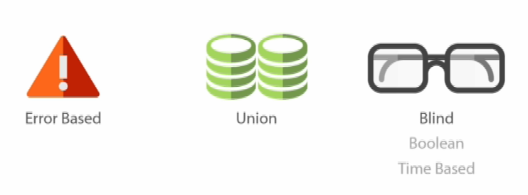

Types of SQL Injection

1) Error Based: this technique forces the database to generate an error, giving the attacker or tester information upon which to refine their injection.
2) Union Injection: can be used when the SQL injection flaw happens in a SELECT statement, making it possible to combine two queries into a single result or result set.
3) Blind Injection: (Advance).type of SQL Injection attack that asks the database true or false questions and determines the answer based on the applications response. This attack is often used when the web application is configured to show generic error messages, but has not mitigated the code that is vulnerable to SQL injection.